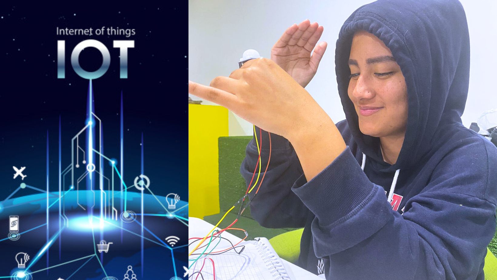

Semana 12
Clase presencial
Esta semana, comenzamos con una pequeña clase donde abordamos los temas de escalabilidad, esto nos ayuda mucho a visualizar como podría ayudar nuestro proyecto en un futuro y aparte también hablamos de IoT (Internet de las cosas) donde nuestro profesor nos mostró como son las ciudades smart y como se va implementando poco a poco en el Perú, exclusivamente en el distrito de Miraflores. Luego nos invitó a explorarlo desde la vista de nuestro proyecto, el cual nosotros ya tendríamos pensado que las interacciones de los niños fueran almacenadas en una base de datos, y ser llevados directamente al área de psicología. Para finalizar la clase, nos concentramos en la codificación de nuestro proyecto, donde nuevamente tuvimos problemas con el sensor PIR, por lo que decidimos cambiar los sensores PIR a botones de colores, eso ayudará a hacer que el semáforo sea más interactivo y que no tengamos el problema de detección. Por último nos dividimos algunas funciones.
Clase virtual
Durante la clase virtual de la semana, nos separamos en grupos y comenzamos a ver la codificación, esta vez con botones, mientras buscábamos nuevas opciones, yo termine el diseño de las piezas que imprimiremos en 3D, y envíe el formulario para coordinar nuestro el día de impresión. Y de repente, comenzamos a tomar en cuenta la importancia del diseño para los niños y también del video spot y de explicación del proyecto, lamentablemente ya no contamos con nuestro compañero de la carrera de CAM, por lo cual nos deja con menos tiempo para avanzar y nos puso más tensos en el grupo, pero quedamos como grupo en solucionar todos los problemas. Por ello, el fin de semana avanzamos en la entrevista con una entidad de Psicología de la UGEL, esta parte será importante para enfocar de manera correcta el proyecto a los infantes y saber la posibilidad que se tiene de implementarse en los colegios de primaria, Reconocemos el esfuerzo de nuestro compañero Kenneth, e igualmente a nuestra compañera Alejandra por comprar los nuevos implementos para la elaboración del semáforo.